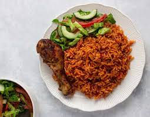

Jollof Rice

Description of Ghana Jollof Rice
Ghana Jollof Rice is a popular West African dish known for its rich, savory flavors and vibrant red color. It's a one-pot meal made with rice, tomatoes, onions, and a blend of aromatic spices. Often served at parties and special occasions, Ghana Jollof Rice is a beloved comfort food that can be enjoyed with various proteins such as chicken, fish, or beef, and is often accompanied by fried plantains and a side salad.
Ingredients
- 1. 2 cups long-grain parboiled rice
- 2. 4 large tomatoes, blended
- 3. 2 tablespoons tomato paste
- 4. 1 large onion, finely chopped
- 5. 1 red bell pepper, blended
- 6. 1 Scotch bonnet pepper, blended (optional for heat)
- 7. 3 cloves garlic, minced
- 8. 1-inch piece of ginger, minced
- 9. 1 teaspoon thyme
- 10. 1 teaspoon curry powder
- 11. 1 teaspoon paprika
- 12. 2 bay leaves
- 13. 1 teaspoon white pepper
- 14. 1 teaspoon black pepper
- 15. 2 bouillon cubes (or 2 teaspoons bouillon powder)
- 16. 1/4 cup vegetable oil
- 17. 4 cups chicken broth (or water)
- 18. Salt to taste
- 19. Optional: vegetables (such as carrots, peas), cooked meat (chicken, beef), or shrimp
Cooking Procedure
- 1. Prepare the Ingredients: Blend the tomatoes, red bell pepper, and Scotch bonnet pepper until smooth. Mince the garlic and ginger.
- Heat the Oil: In a large pot, heat the vegetable oil over medium heat.
- 3. Sauté the Onions: Add the chopped onions to the pot and sauté until they are translucent and fragrant, about 5 minutes.
- 4. Add Garlic and Ginger: Stir in the minced garlic and ginger, cooking for an additional 2 minutes.
- 5. Incorporate the Tomato Paste: Add the tomato paste to the pot and cook for 3-5 minutes, stirring continuously to reduce its tanginess.
- 6. Add Blended Tomatoes and Peppers: Pour in the blended tomato, red bell pepper, and Scotch bonnet mixture. Cook for 10-15 minutes, stirring occasionally until the sauce reduces and the oil begins to separate from the tomato mixture.
- 7. Season the Sauce: Add thyme, curry powder, paprika, white pepper, black pepper, bouillon cubes, and bay leaves. Stir to combine.
- 8. Add Rice: Pour the rice into the pot, stirring well to ensure it is fully coated with the tomato sauce.
- 9. Add Broth: Pour in the chicken broth, ensuring the liquid covers the rice. If necessary, add more broth or water to cover the rice.
- 10. Cook the Rice: Bring the mixture to a boil, then reduce the heat to low. Cover the pot and let it simmer for about 30-40 minutes, or until the rice is cooked and the liquid is absorbed. Stir occasionally to prevent sticking.
- 11. Optional Additions: If using vegetables, cooked meat, or shrimp, add them to the pot about 10 minutes before the rice is done cooking to heat through.
- 12. Final Seasoning: Taste and adjust seasoning with salt and additional spices if necessary.
- 13. Serve: Once the rice is cooked and fluffy, remove the bay leaves. Serve the Jollof Rice hot, garnished with your choice of protein and accompanied by sides like fried plantains and salad. Enjoy!